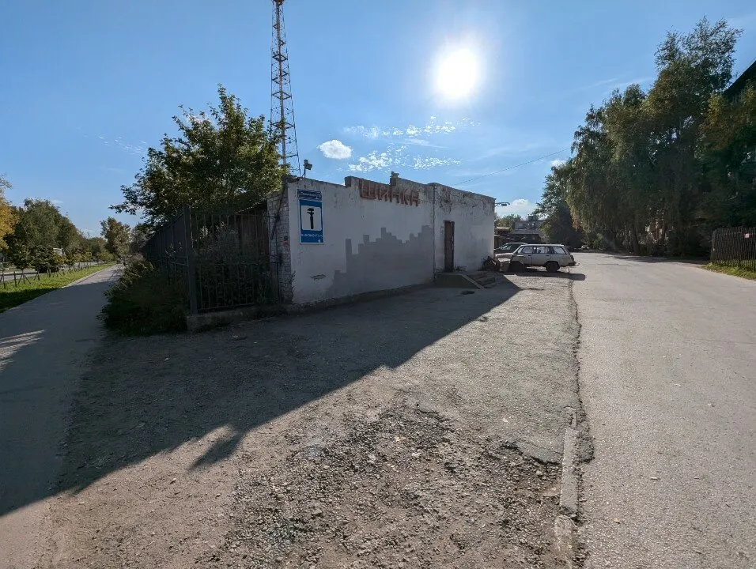
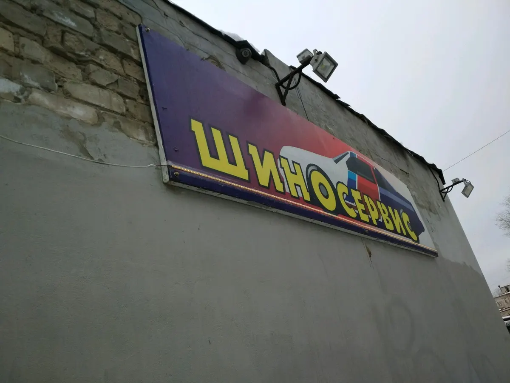
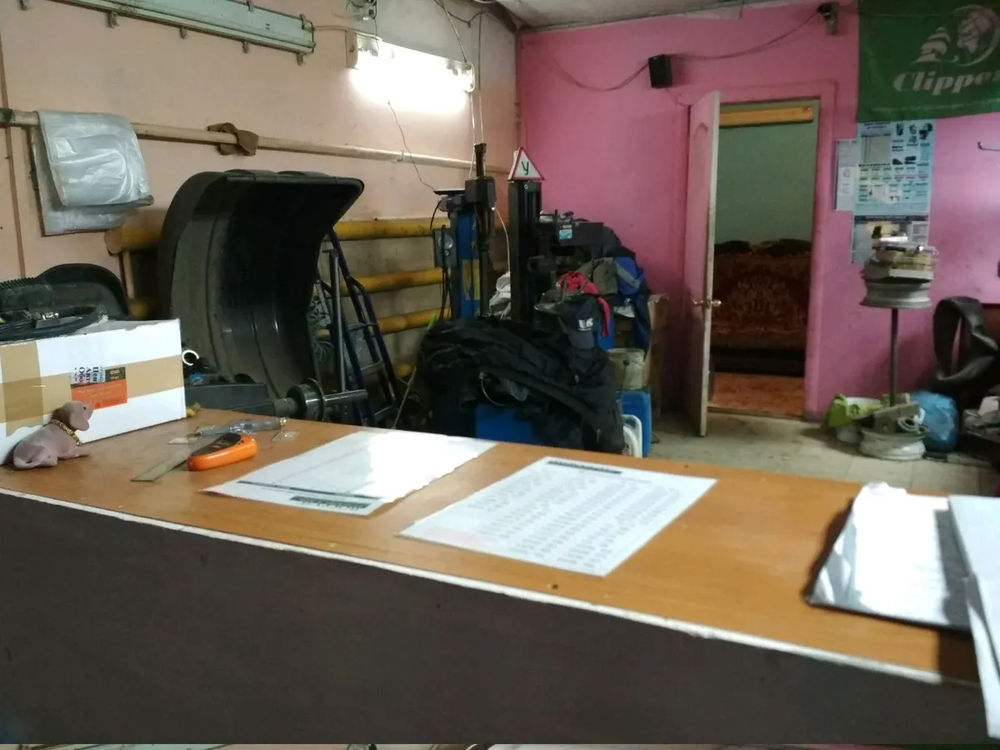
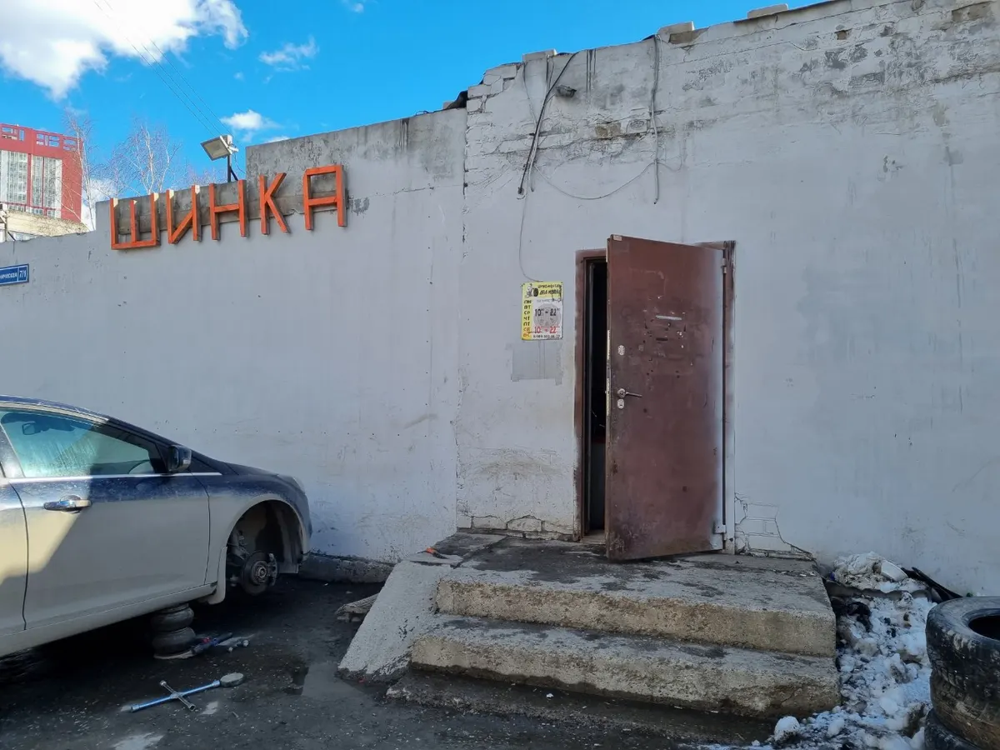

Шиномонтаж · Пермь
Шиномонтаж в Перми: переобуем быстро, цены без накруток
Техническая, 7/1. Шиномонтаж, балансировка, ремонт боковых порезов и сезонное хранение шин. Работаем каждый день с 10:00 до 22:00.
- Каждый день с 10:00 до 22:00
- Запись по телефону или во ВКонтакте
- Сезонное хранение шин

Услуги и цены
Цену называем по радиусу колёс и виду работ, при записи.
Услуги
- Шиномонтаж (переобувка)уточнить
- Балансировка колёсуточнить
- Ремонт боковых порезовуточнить
- Сезонное хранение шинуточнить
Как проходит
- 01
Записываетесь на время
Напишите во ВКонтакте или позвоните.
- 02
Приезжаете по адресу
Техническая ул., 7/1.
- 03
Переобуваем и балансируем
Мастера доброжелательные и готовы дать консультацию.
- 04
Забираете машину



Что отмечают клиенты в отзывах
Доброжелательные мастера
Готовы дать консультацию, пишут клиенты.
Низкие цены
Клиентка пишет, что цена за переобувку ниже всех.
Быстро и качественно
Так оценивают работу мастеров.
Отзывы с Яндекс.Карт
«Хороший шиномонтаж. Можно предварительно записатся по телефону. Специалисты доброжелательно настроены, готовы дать консультацию. Обычно много народу, так как имеет хорошие отзывы,»
Человек в шляпе · 4 мая 2024
«Цена за переобувку ниже всех, очереди не было. Все прекрасно, все понравилось. Ещё приеду»
Татьяна Foxie · 22 мая 2024
«Отличный шиномонтаж, переобувался по записи, низкие цены советую всем автолюбителям. Быстрая и качественная работа мастеров.»
Белый · 22 сентября 2019
Отзывы с карточки на Яндекс.Картах, без правок.
Частые вопросы
Когда работаете?
Каждый день с 10:00 до 22:00.
Где вас найти?
Техническая улица, 7/1, Пермь.
Есть ли хранение шин?
Да, сезонное хранение. Условия уточняйте при записи.
Как записаться?
Напишите во ВКонтакте или позвоните: кнопки в блоке контактов.
Запишитесь на удобное время
- Адрес
- Техническая ул., 7/1, Пермь
- Часы
- Ежедневно, 10:00–22:00
- Телефон
- +7 (922) 379-05-65